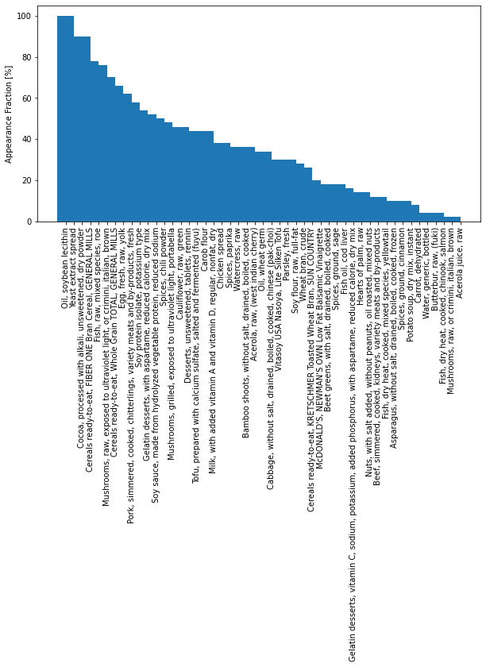

|
|
|
05/12/23 Just trying to beat $u''(x) < 0$ Anecdotally, I've often heard that one can survive on a diet of purely potatoes and milk. Dubious, I decided to find out for myself. In considering the above, I became interested in the more general questions: given a set of nutritional constraints, how can one construct an optimal diet? And, can we identify 'superfoods' that tend to appear in optimal diets? DatasetTo answer these questions, we first need a dataset of foods and their nutritional properties. I found such a dataset on kaggle, originally sourced here. It contains 8789 foods and 75 nutritional features per 100g, including summary features (calories, protein, fat, carbohydrates, etc.), vitamins, minerals, amino acids, and fatty acids. To clean the dataset I removed a few useless columns (e.g. trans fat) and foods unlikely to realistically make up an adult's sdiet (e.g. babyfood, beverages, leavening agents). I noticed a significant fraction of foods were missing the full amino acid breakdown of their protein content; rather than fill these columns with, for example, the median value, I left these set to zero. In practice, I found the choice didn't significantly affect optimal diet results[^1]. ConstraintsSecondly, we need to establish the set of nutritional constraints. We can of course set whatever constraints we want but to get the 'healthiest' ones is harder than it sounds since nutrition is a controversial topic and scientifically the field is underdeveloped; specific nutritional requirements for individuals are a bit of a grey area[^2]. I used the US daily recommended allowances (male) as lower limits for most nutritional features and the European food safety authority tolerable upper intake levels as upper limits for vitamins and minerals. Below is the full list of constraints. Not all nutritional features have constraints, and some only have a lower or upper limit. Unconstrained nutritional features are not listed below.Macros50 < total_fat (g) < 120 10 < saturated_fat (g) < 25 70 < protein (g) < 100 130 < carbohydrate (g) < 400 Vitamins550 < choline (mg) < 2500 400 < folate (mcg) < 900 400 < folic_acid (mcg) < 900 16 < niacin (mg) < 30 5 < pantothenic_acid (mg) < 100 1.3 < riboflavin (mg) < 500 1.2 < thiamin (mg) < 200 3000 < vitamin_a (IU) < 8000 2.4 < vitamin_b12 (mcg) < 8 1.3 < vitamin_b6 (mg) < 4 90 < vitamin_c (mg) < 1000 600 < vitamin_d (IU) < 5000 15 < vitamin_e (mg) < 500 120 < vitamin_k (mcg) < 500 Minerals1500 < sodium (mg) < 3000 1300 < calcium (mg) < 2000 0.9 < copper (mg) < 7 8 < iron (mg) < 35 400 < magnesium (mg) < 500 2.3 < manganese (mg) < 7 700 < phosphorous (mg) < 3500 4700 < potassium (mg) < 7000 55 < selenium (mcg) < 300 11 < zinc (mg) < 35 Amino Acids0.287 < cystine (g) < inf 0.7 < histidine (g) < inf 1.4 < isoleucine (g) < inf 2.73 < leucine (g) < inf 2.1 < lysine (g) < inf 0.728 < methionine (g) < inf 0.875 < phenylalanine (g) < inf 1.05 < threonine (g) < inf 0.28 < tryptophan (g) < inf 0.875 < tyrosine (g) < inf 1.82 < valine (g) < inf Carbohydrates38 < fiber (g) < 55 0 < sugars (g) < 40 Fatty Acids17 < polyunsaturated_fatty_acids (g) < 30 Other50 < cholesterol (mg) < 250 0 < alcohol (g) < 5 100 < water (g) < 2000I disregarded constraints on calories and food weight for now since these will be included as part of the optimization objective. Healthy humans typically need 1950 < calories (kcal) < 2500 and eat 3 < weight (lbs) < 5 of food per day. OptimizationNow we can start by considering the optimal diet. This can be formulated as a linear program (LP). In fact, this exact problem led John von Neumann to postulate the theory of duality for constrained optimization[^3]. In 1947, George Dantzig approached von Neumann at the RAND corporation with the problem of devising a diet that met a soldier's nutritional needs as cheaply as possible, writing down an LP. Von Neumann immediately said 'oh, that!', and proceeded to connect the problem to his minimax theorem for two person zero sum games, to Dantzig's amazement. The LP formulation of the optimal diet problem is as follows. Let $x$ be the vector of food weights in the diet in units of 100g, the optimization variable to be found. The nutritional constraints on $x$ can be summarized as $l < Ax < u$, where $l$ is the vector of lower bounds, $u$ upper bounds, and $A$ the matrix of constrained nutritional features. We have the additional constraint that $x > 0$, since we can't un-eat foods. Of course, many diets $x$ can satisfy this set of linear nutrtional constraints so we need a criterion to decide which of these feasible diets is the best. We can do this by defining a cost function $c^Tx$ that assigns a 'cost' to each food in the diet. The optimal diet is then the one that minimizes the cost function while satisfying the nutritional constraints. But what should the 'cost' vector $c$ be? There are a few options. We could define $c$ as the literal cost, the price of each food. Solving the resulting LP would find the cheapest diet that satisifes the nutritional constraints. This is pretty interesting, but unfortunately our dataset doesn't come with food prices -- they also presumably vary widely depending on where you live. The feasible options are minimizing weight (most mass efficient nutritional diet), calories (lowest calorie nutrtional diet), or both. With the original objectives of this article in mind, to get the best of both worlds I'm going to tradeoff between both of these objectives; at the extreme ends of the tradeoff we get the optimal diets for each objective. The LP is then:Minimize $c^T\mathbf{x} + \gamma\mathcal{1}^T\mathbf{x}$ subject to $l \leq A\mathbf{x} \leq u$ $\mathbf{x} \geq 0$where $c$ is the vector of calories per 100g, the ones vector $\mathcal{1}$ is the vector of weights in units of 100g, and $\gamma$ is the tradeoff variable. Interestingly, note that since $\mathbf{x} \geq 0$, the objective $\mathcal{1}^T\mathbf{x}$ is equivalent to the L1 norm $|\mathbf{x}|_1$, meaning the solution to the optimization problem will be sparse. The optimal diet will be composed of a few foods that are very efficient at satisfying the nutritional constraints. Before solving the problem, I want to explain why I chose to include calories as part of the objective function. Minimizing food weight makes sense, you don't want the nutritional diet to be a chore to eat (imagine eating 3kg of raw spinach), but calories are usually considered a nutritional requriement and could be included as a constraint instead of an objective. The reason is I am more interested in identifying specific foods that appear in many optimal diets rather than the diets themselves. Lower calorie intakes (not too low) are associated with good health outcomes and longevity. By including calories as part of the objective, the optimal diets are incentivized to include more low calorie 'superfoods'. Foods in the optimal diet that are robust to changes in the tradeoff parameter $\gamma$ must be particularly low calorie and nutritionally dense. ResultsI solve the LP above using CVXPY for a sweep of $\gamma$ values between [1e-1,1e4]. Outside of this $\gamma$ range the optimal diet doesn't change meaningfully. The optimal tradeoff curve between calories and weight is shown below.
And here is the optimal diet for $\gamma = 1$ with weight in units of 100g: Total calories: 871.1281429945614 kcal Total weight: 1113.0965300000835 g Weight (100g) Name4.412183 Cauliflower, raw, green 1.453970 Watercress, raw 0.787405 Bamboo shoots, without salt, drained, boiled, cooked 0.657726 Chicken spread 0.588269 Cocoa, processed with alkali, unsweetened, dry powder 0.569966 Fish, raw, mixed species, roe 0.518734 Mushrooms, grilled, exposed to ultraviolet light, portabella 0.516959 Tofu, prepared with calcium sulfate, salted and fermented (fuyu) 0.506891 Cabbage, without salt, drained, boiled, cooked, chinese (pak-choi) 0.361921 Cereals ready-to-eat, FIBER ONE Bran Cereal, GENERAL MILLS 0.292224 Gelatin desserts, with aspartame, reduced calorie, dry mix 0.147996 Oil, soybean lecithin' 0.146714 Vitasoy USA Nasoya, Lite Silken Tofu 0.095675 Yeast extract spread 0.048087 Oil, wheat germ 0.023411 Mushrooms, raw, exposed to ultraviolet light, or crimini, italian, brown 0.002834 Desserts, unsweetened, tablets, rennin SuperfoodsCount of how many times foods appear in optimal diets. 
Potatoes and MilkTo return to the original inspiration for this article, can a diet of solely potatoes and milk satisfy all of the nutritional constraints? The answer is emphatically ... [^1]: Amino acid nutritional requirements are often filled by dense complete protein sources like soy in both cases. [^2]: Particularly since digestive efficiency is very poorly understood, and varies widely between individuals. You could eat the 'optimal' nutritional diet on paper but only digest 70% of it, making it a suboptimal diet for you. [^3]: "The Man from the Future: The Visionary Life of John von Neumann" Ananyo Bhattacharya 2021 |